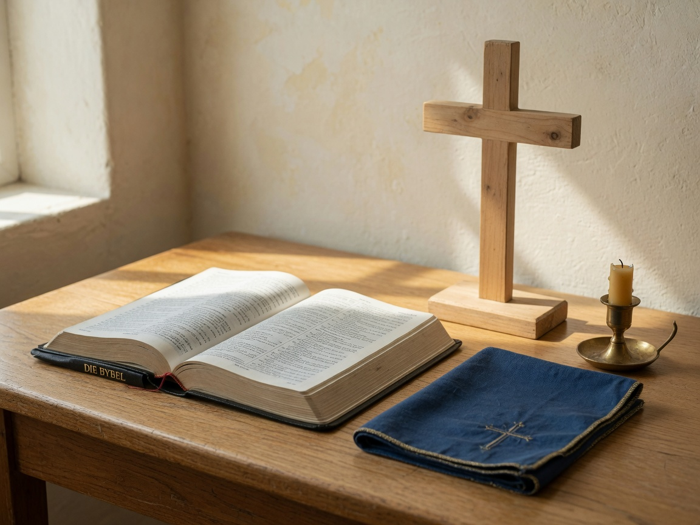
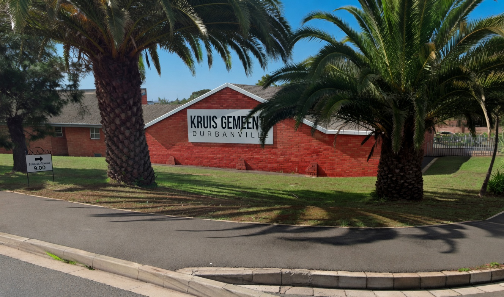
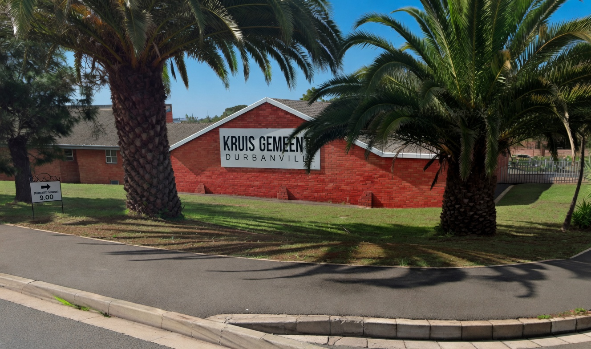
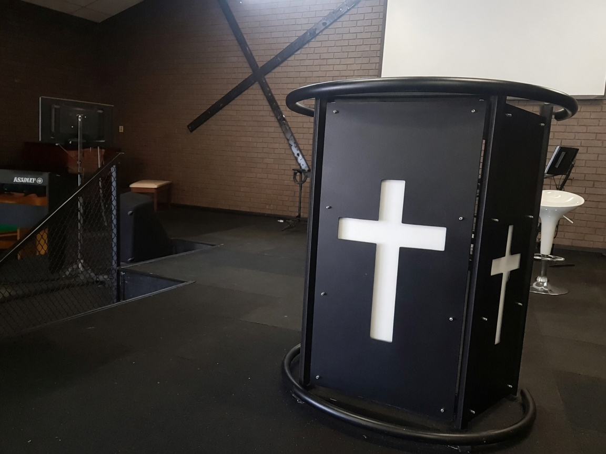
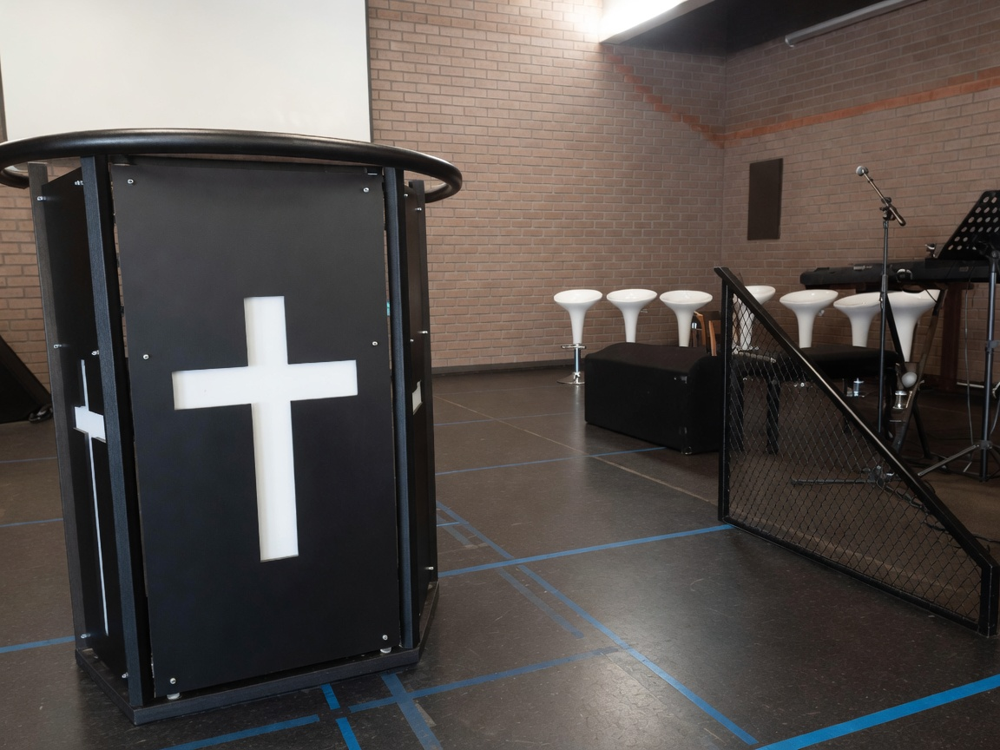
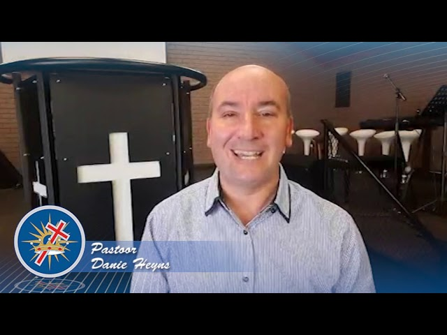
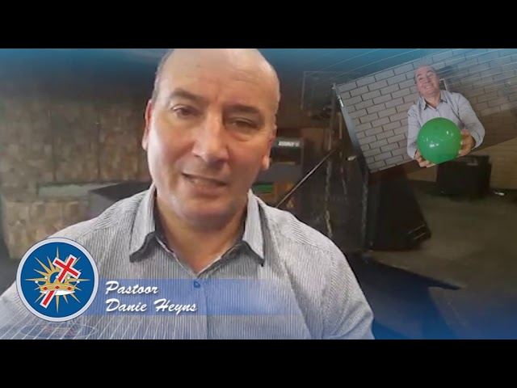
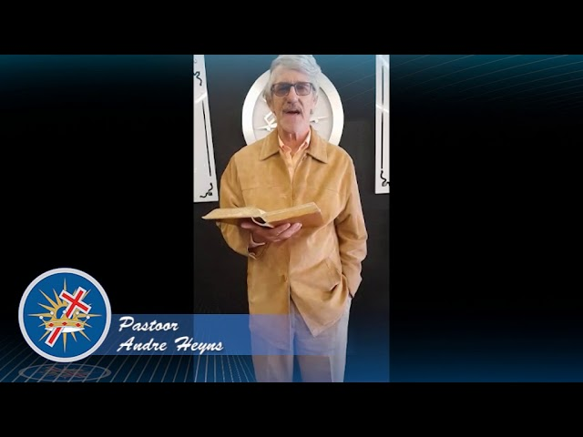

Die boek van
Kruis Gemeente
Durbanville
Jesus Christus, gekruisig en opgestaan
II
Die Heilige Skrif
Ek is die weg en die waarheid en die lewe.
Johannes 14:6
Niemand kom na die Vader toe behalwe deur My nie. Dit is die eerste blad van hierdie gemeente. Nie ’n program nie. Nie ’n gebou nie. Jesus.

III
Die gemeente
Ons preek Christus.
Want ek het my voorgeneem om niks onder julle te weet nie as Jesus Christus, en Hom as gekruisigde. AGS Kruis Gemeente Durbanville is ’n Pinksterkerk van die Apostoliese Geloofsending. Die Bybel is ons boek. Die kruis is ons naam.
1 Korintiërs 2:2
- 1 Christus — Sondagoggend 09:00 kom ons bymekaar om Jesus te aanbid.
- 2 Die Woord — Die Bybel is nie dekor nie. Dit is die boek waaruit ons leef.
- 3 Die kruis — Jesus Christus, gekruisig en opgestaan. Daar is plek vir jou.
- 4 Die Gees — Ons glo die Heilige Gees lei, genees en stuur mense vandag nog.
IV
Die byeenkoms
Sondagoggend.
Moenie die byeenkoms van julle versuim nie. Ons kom bymekaar in Afrikaans. Die bord by die ingang wys 9:00. Kom soos jy is.
Hebreërs 10:25
V
Kom nader
Kom soos jy is.
Kom na My toe, almal wat vermoeid en belas is, en Ek sal julle rus gee. Niemand verwag dat jy alles ken nie. Stap in. Bly of gaan. Jy is welkom.
Matteus 11:28
- 1 Vind ons — Hoek van St John- en van Bredastraat. Baksteensaal, twee palmbome, wit bord. Die oprit buig in.
- 2 Stap in — Sondagoggend 09:00, Afrikaans. Dra wat jy gemaklik is. Kinders is welkom.
- 3 Bly of gaan — Groet iemand ná die tyd, of loop stil-stil uit. Jy is in elk geval welkom terug.
VI
Die huis
So lyk die saal.




VII
Die plek
St John- en van Breda.
St John Road, Vergesig, Durbanville, 7550. Soek die baksteensaal met die twee palmbome en die wit bord: Kruis Gemeente Durbanville.
- 083 966 8164
- admin@agsdurbanville.co.za
- Sondagoggend 09:00 · Afrikaans
VIII
YouTube
Die getuienis.
Werklike preke van ons kanaal, Ags Durbanville Kruisgemeente. Van 2020 — nie hierdie Sondag se diens nie.

Dade · Pastoor Danie Heyns
Dissipline · Pastoor Danie Heyns 4 Des 2020 · Dr Bronkhorst
Psalm 91 · Pastoor Andre HeynsIX
Skryf
Stuur ’n blad.
Dit gaan na admin@agsdurbanville.co.za. Of WhatsApp 083 966 8164. Ons antwoord so gou as ons kan.
WhatsApp